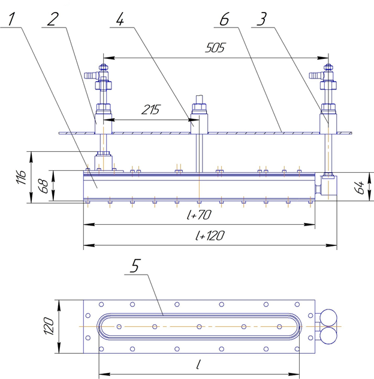

Ion treatment sources are designed for final surface cleaning parts in a vacuum, coating by sputtering targets with a formed beam, etching the surface of parts and applied coatings, surface polishing, assisting coating processes.
Our company offers ion sources with cold cathode and closed electron drift. In such ion sources, closed drift of electrons in crossed electric and magnetic fields, ionization of the working gas and acceleration of ions in the cathode-anode gap of the order of the Larmor radius of electrons are realized.
In Fig. Figure 1 shows a diagram of one of the options for an extended linear ion source.

Rice. 1 Diagram of the ion source 1-water-cooled housing, 2-high-voltage input, 3-input for cooling the housing 4-input of working gases, 5-bit interelectrode gap, 6-walls of the vacuum chamber
| № | Parameter name | Meaning |
| 1 | Working pressure, Pa | 0.008 - 0.1 |
| 2 | Length of the ribbon beam of manufactured ion sources, mm | from 50 to 3200 |
| 3 | Average ion energy at accelerating voltage up to 5000 V, eV; | from 60 to 1000 |
| 4 | Ion current density per unit length of the outlet slit with a slit width of 2 mm, mA/cm2 | up to 10 |
| 5 | Uniformity of ion current density along the length of the ribbon beam,% | ±3 |
| 6 | Ion beam current/source discharge current ratio | not less than 0.5 |
| 8 | Working gases | inert gases, oxygen, nitrogen, hydrocarbons |
- energy;
- impulse;
- chemical composition;
- mass of ions;
- charge of ions.
There are two main options for ion beam sources:
2. Ion sources with coaxial input are characterized by the ability to simply change the position in the vacuum chamber by moving and rotating along the axis of the source, or moving the source with a sealing unit to any suitable hole in the chamber. The coaxial input does not require additional electrical insulation and is electrically connected to the installation housing.
Ion sources can be equipped with neutralization cathodes or have other design features to control the amount of surface charge in the processes of cleaning, etching, and sputtering targets:
- with a hollow cooled body (two cooling circuits, anode and body);
- modernized ion-optical system;
- neutral magnetic field of the source;
- with charged ion compensators;
- shutter of the ion source, Fig. 2
- ion source rotation device with coaxial input, Fig. 3
Our ion sources have a design that has been tested by time and thousands of technological processes and are used not only in Russia, but also in the USA, England, Hungary, Austria and other countries.
Interaction with Clients begins with the selection of a technological source, selection of additional options, consultation on standard process modes (processing of glass, polycor substrates and substrates made of other materials with an ion source) and continues with service maintenance of the sources.
Advantages of our ion sources:
- We provide a model of the ion source for designers, and determine the optimal distance to the substrate;
- a balanced magnetic field from the ion source allows for uniform processing on long substrates and guarantees the absence of foreign impurities in the substrate;
- galvanic coating of the internal cooling cavities of the ion source allows to extend the service life;
- fast production times;
- multi-stage quality control;
- stable characteristics over time;
Contact our company and get an ion source that is optimally suited for your processes.